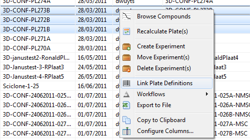
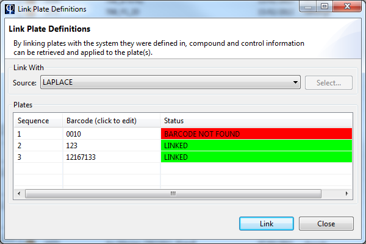

When a plate is imported in Phaedra, only its raw data is imported: well features, subwell features, raw images and image overlays.
Before well features can be normalized, the plate needs to be linked to its definition, or layout.

A plate that has not been linked to its definition, will usually show as a grey heatmap, filled with NaN (Not a Number) feature values and EMPTY well types.
Phaedra assumes that plate definitions are stored in an external plate management system, and can retrieve the plate layout from such a system. If a plate has no formal definition, a layout template can be created to link with the plate instead.
Linking with a plate management system
When linking a plate via a plate management system, the plate must have a correct barcode. Right-click on the plate and select Link Plate Definitions.

A dialog will appear allowing you to select the plate management system to link with.

When linking, Phaedra will look for plate definitions with the specified barcodes. If your plate barcodes in Phaedra do not match the barcodes in the plate management system, you can modify the barcodes here by clicking on a barcode and typing another barcode instead.
Select Link to retrieve the plate definitions and apply them to the plates.